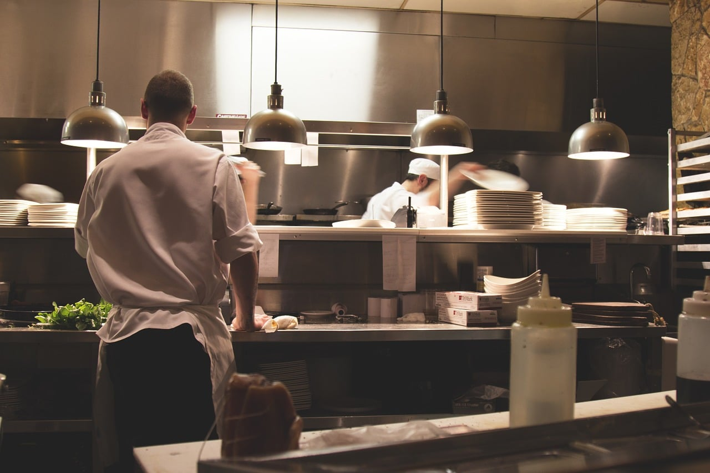

Sobre nós
A história da nossa hamburgueria remonta a um momento de inspiração e amor pela culinária. Fundada por uma família apaixonada por sabores autênticos e pela arte de transformar simples ingredientes em experiências gastronômicas memoráveis nossa jornada começou com uma visão clara: criar um espaço onde a tradição se encontrasse com a inovação. Desde o primeiro hambúrguer preparado na nossa chapa, buscamos honrar essa herança, mantendo vivos os valores de qualidade, hospitalidade e paixão pela comida que nos levaram a abrir nossas portas.
